Toyooka, Hyogo: things to do, food and stays
Toyooka · Hyogo
Toyooka
Highlighted on the Hyogo map.
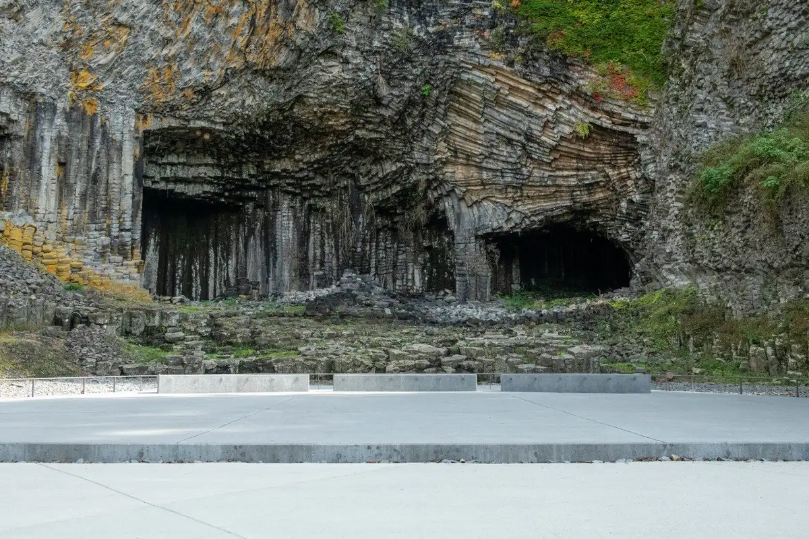
Stay
西村屋ホテル招月庭
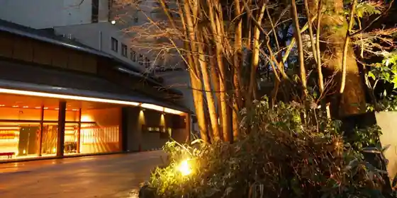
Nishimura Ya Hotel Shogetsu Niwa
Hotel at Kinosaki Onsen in Kinosaki, Toyooka.
西村屋本館
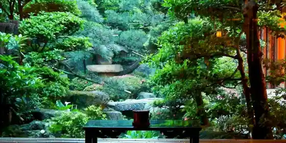
Nishimura Ya Honkan
Inn at Kinosaki Onsen in Kinosaki, Toyooka.
城崎／日和山温泉 ホテル金波楼
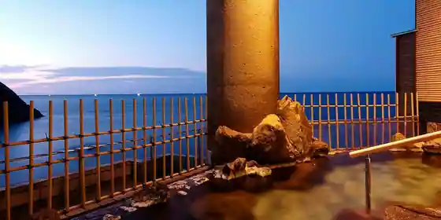
Kinosaki / Hiyoriyama Onsen Hotel Kinpa Ro
Hotel at Hiyoriyama Onsen in Seto, Toyooka with scenic views and local seafood dinners.
きのさきの宿 緑風閣
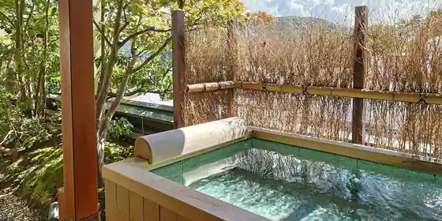
Kinosakino Yado Ryokufu Kaku
Inn at Kinosaki Onsen in Kinosaki, Toyooka.
城崎円山川温泉 銀花
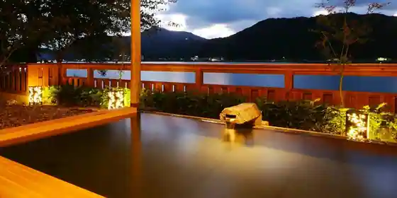
Kinosaki Maruyama Kawa Onsen Ginka
Inn at Kinosakimaruyamakawa Onsen in Kojima(Oshima), Toyooka.
城崎温泉 四季香る宿 いちだや
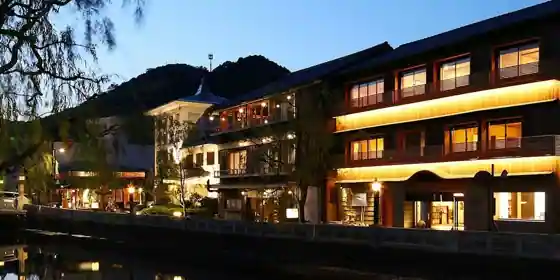
Kinosaki Onsen Shiki Kaoru Yado Ichidaya
Inn at Kinosaki Onsen in Kinosaki, Toyooka with in-room dining.
川口屋城崎リバーサイドホテル
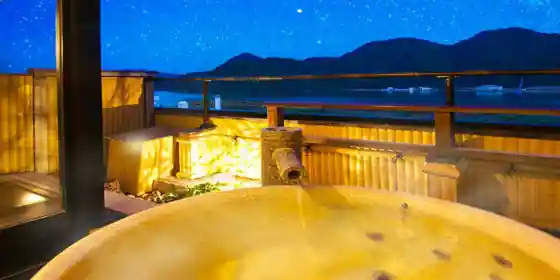
Kawaguchi Ya Kinosaki Ribasaido Hotel
Hotel in Kinosaki, Toyooka with open-air baths and private baths.
城崎温泉 登録有形文化財の宿 三木屋
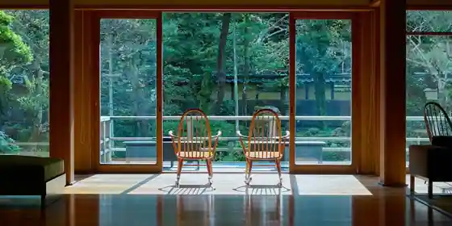
Kinosaki Onsen Toroku Yukei Bunkazai No Yado Miki Ya
Inn at Kinosaki Onsen in Kinosaki, Toyooka.
休暇村 竹野海岸
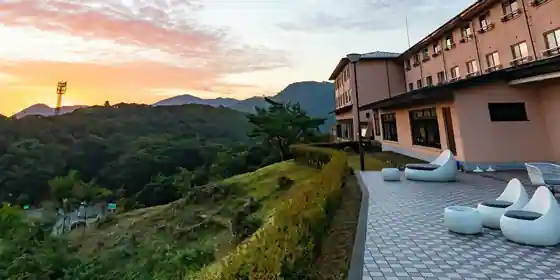
Kyukamura Takeno Kaigan
城崎温泉 つちや旅館
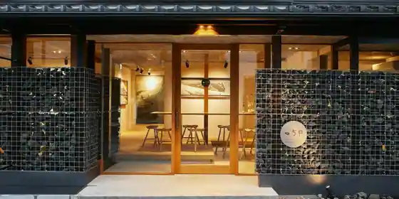
Kinosaki Onsen Tsuchiya Ryokan
Ryokan inn at Kinosaki Onsen in Kinosaki, Toyooka.
炭平別邸 季ト時
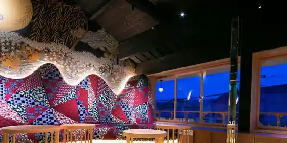
Sumi Taira Bettei Ki To Toki
Inn at Kinosaki Onsen in Kinosaki, Toyooka.
リロステイVILLA 城崎 ザ・コンドミニアム（旧レイセニット城崎）
Rirosutei VILLA Kinosaki Za Kondominiamu (Kyu Reisenitto Kinosaki)
Dining
さんぽう西村屋 本店
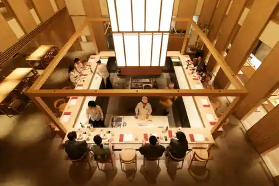
Sanpo Nishimura Ya Hon
そば処 桂.
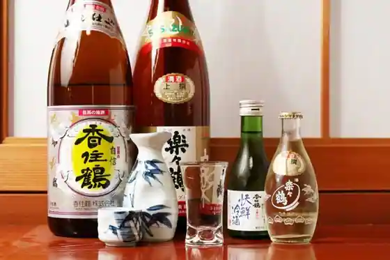
Soba Tokoro Katsura.
沢庵
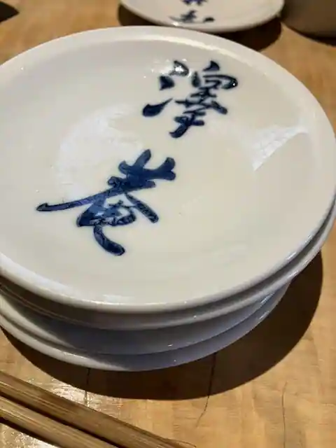
Takuan
挽きたてそば 大門
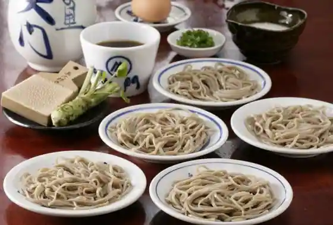
Hiki Tatesoba Daimon
近又
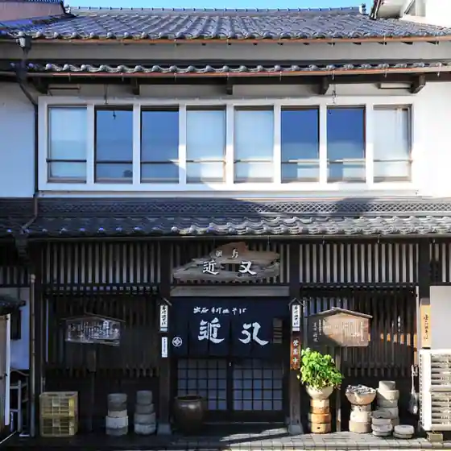
Kin Mata
なか井
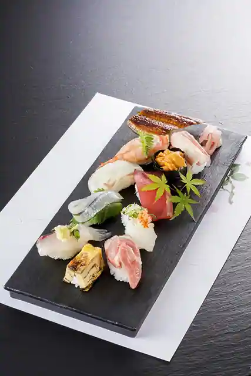
Naka I
城崎温泉 山本屋
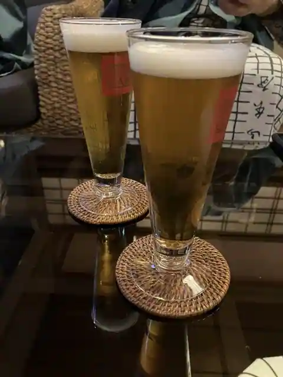
Kinosaki Onsen Yamamotoya
たまご専門 本巣ヱ 城崎総本家
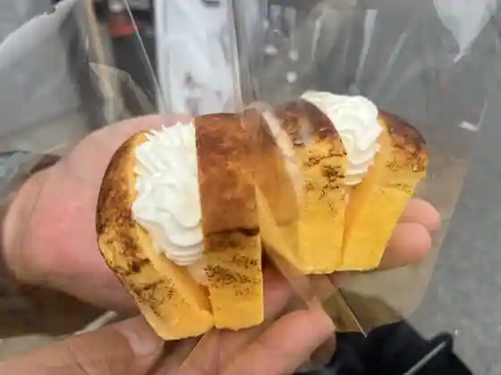
Tamago Senmon Motosu E Kinosaki So Honke
をり鶴
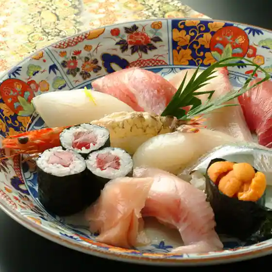
Wori Tsuru
おけしょう鮮魚 海中苑 本店
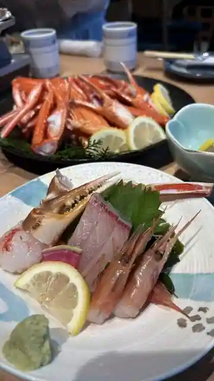
Okesho Sengyo Kaichu En Hon
但熊
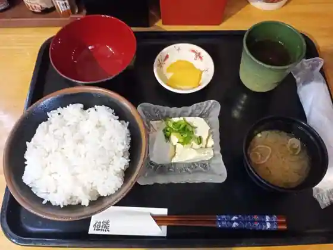
Tada Kuma
GUBIGABU
GUBIGABU
官兵衛
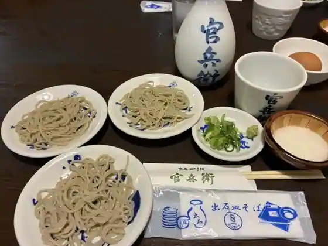
Kanbe
たくみや
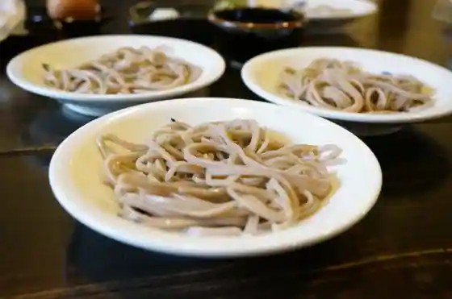
Takumiya
手打皿そば 甚兵衛
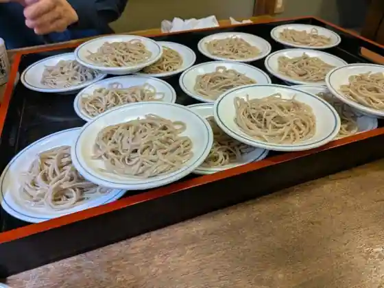
Teuchi Sara Soba Jinbe
天通
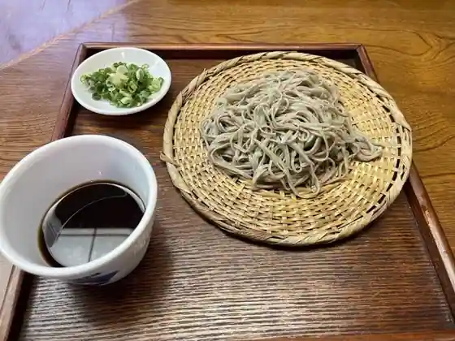
Tori
床瀬そば
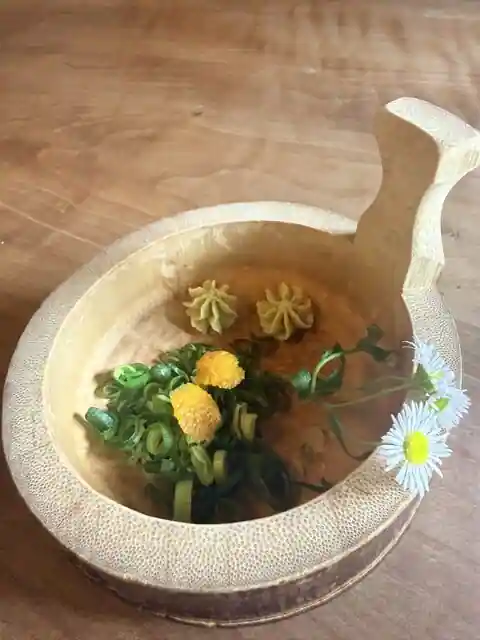
Toko Se Soba
フルーツアイランド百果園
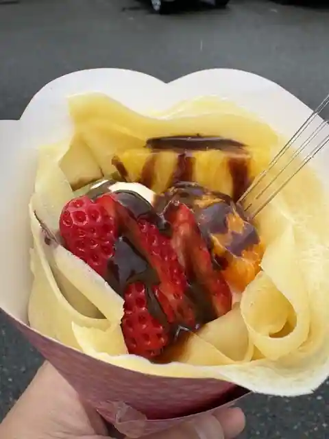
Furutsuairando Hyaku Kaen
紀ノ川
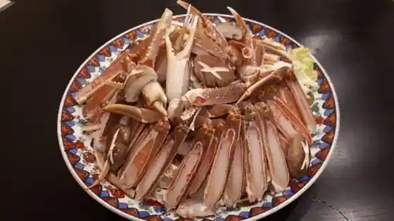
Kinokawa
トキワガーデン
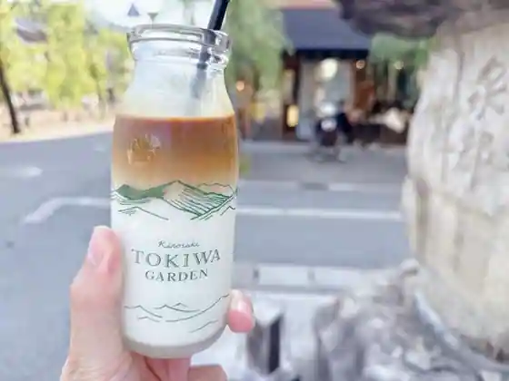
Tokiwa Garden
発酵餡菓 うかわ
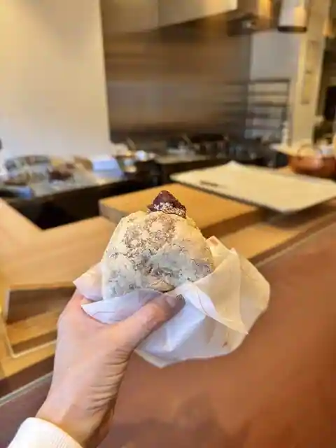
Hakko An Ka Ukawa
Sights
Izushi Castle Ruins
Stone walls and stair approaches of the former Izushi castle hill above the castle town
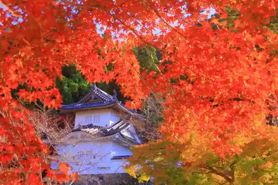
Genbudo Park
National natural monument of hexagonal basalt columns carved by the Maruyama River
Kannabe Highlands
Plateau resort area above Toyooka for skiing, hiking, and volcanic highland views
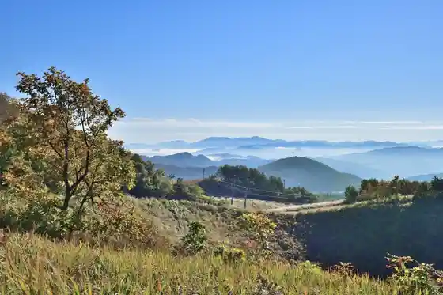
Kinosaki Marine World
Aquarium and marine park on the Sea of Japan coast near Kinosaki
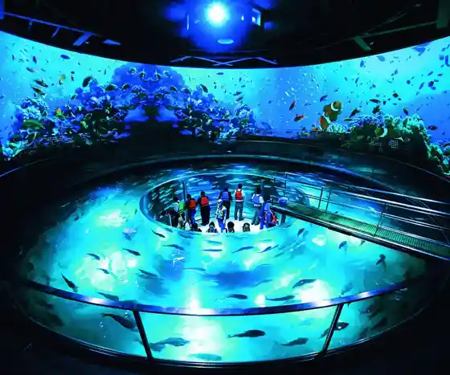